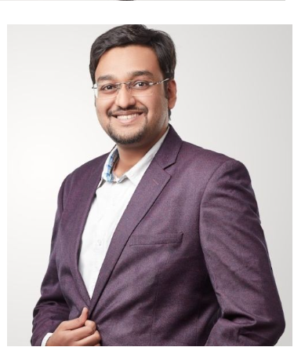

AI & GenAI Leader
LLM • RAG • Personalization • AI Platforms • People Leadership
AI & GenAI Leader with 14+ years of experience building and deploying large-scale AI systems across BFSI, Pharma, Digital Commerce and Enterprise Platforms. Currently heading AI, Data Science & Engineering at Bajaj Finance, leading a 50+ member AI organization delivering production GenAI, personalization, and decision intelligence systems impacting millions of customers.
Enterprise GenAI Systems
Multimodal AI Platform
Agentic AI for BI
Personalization AI